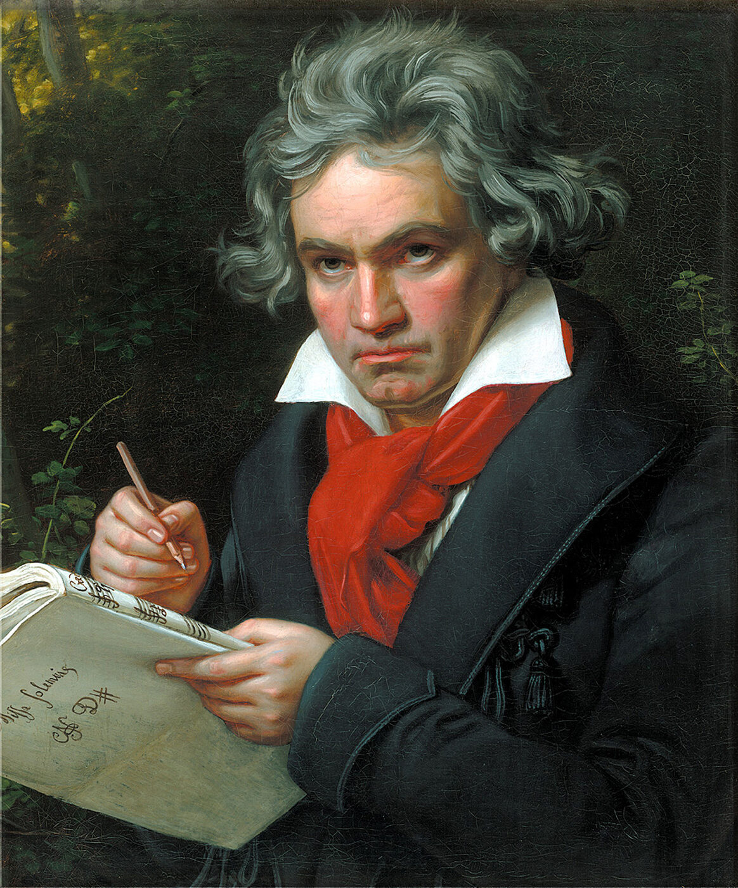

Ludwig van Beethoven
Moonlight SonataBeethoven turned struggle into sound, giving classical form a more human, storm-lit voice.
Begin again with courage. Even silence can become music.
Poem for this music
Prometheus Unbound
To suffer woes which Hope thinks infinite;
To forgive wrongs darker than death or night.
Leave a reflectionTap when a thought arrives
♪
Ask MaestroLudwig van Beethoven